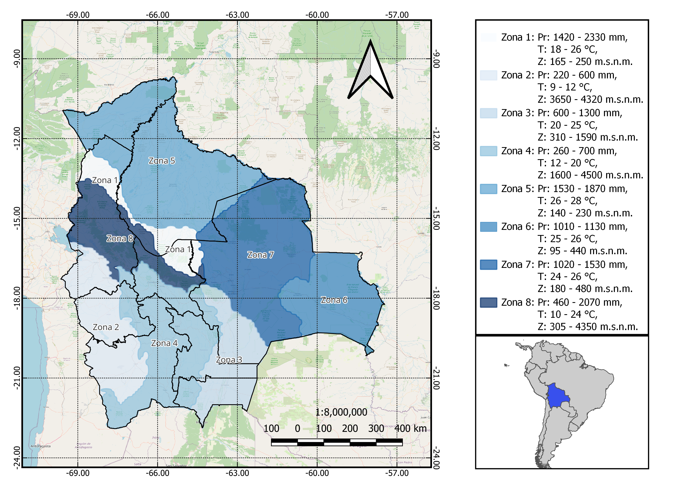

Consultora AquaTerra
Bolivia presenta una configuración territorial particularmente compleja, caracterizada por una alta variabilidad tanto geográfica como orográfica que abarca desde regiones andinas de gran altitud hasta llanuras amazónicas y zonas de transición interandina.

Esta diversidad de condiciones topográficas, climáticas e hidrológicas genera dinámicas espaciales y temporales heterogéneas, lo que dificulta significativamente el análisis y la comprensión de los procesos hidrológicos en el país. Por lo que realizar un trabajo de calidad implica trabajar con datos de calidad para una toma de desiciones adecuada.
Nuestra consultora especializada en estudios hidrológicos y gestión integral de cuencas, orientada a brindar soluciones técnicas basadas en evidencia para la planificación y el manejo sostenible del recurso hídrico. Contamos con experiencia en análisis hidrometeorológico, modelación y evaluación de disponibilidad hídrica, así como en la caracterización de riesgos asociados a eventos extremos. Nuestro trabajo se sustenta en una amplia base de datos proveniente de fuentes satelitales y de estaciones hidrológicas de libre acceso, lo que nos permite generar diagnósticos precisos, robustos y adaptados a distintos contextos territoriales.
Nuestro portal también funciona como una plataforma de datos espaciales para la región, concebida para facilitar el acceso abierto y la consulta eficiente de información hidrometeorológica. Integra fuentes reconocidas como SENAMHI, CHIRPS, IMERG, PERSIANN, entre otras; organizadas bajo criterios técnicos que permiten su uso en análisis, investigación y toma de decisiones. Asimismo, buscamos ofrecer un servicio integral que contribuya al desarrollo científico, poniendo a disposición tanto artículos académicos de alcance internacional como los estudios y desarrollos generados por nuestro propio equipo.
Publicaciones


Bases de datos hidrometeorológicas
Conjunto de datos de precipitación que combina información satelital y de estaciones meteorológicas para estimar lluvias con alta resolución (~5 km) desde 1981 con cobertura casi global, siendo ampliamente utilizado en estudios hidrológicos y climáticos.
Producto de precipitación que combina múltiples sensores satelitales dentro de la misión GPM de la NASA para estimar lluvias a escala global. Ofrece una alta resolución espacial (~10 km) y temporal (30 min), lo que lo hace especialmente útil para el monitoreo casi en tiempo real.
Producto que utiliza imágenes satelitales infrarrojas y modelos de redes neuronales para estimar lluvias a escala global. Con resolución espacial media (~25 km) y ampliamente utilizado, especialmente en regiones con escasa cobertura de estaciones.
Conjunto de datos de temperatura que combina información satelital infrarroja con observaciones de estaciones para estimar temperaturas del aire a escala global. Ofrece una resolución espacial de ~5 km y cobertura temporal desde 1983, siendo útil en estudios climáticos, hidrológicos y de variabilidad térmica.
Servicios
- Asesoría y consultora
- Análisis hidrológico para gestión de agua y/o protección contra crecidas
- Análisis y gestión de cuencas
- Proyecciones climáticas bajo escenarios de cambio climático
- Publicación de artículos científicos
- Apoyo en trabajos de pre-grado y pos-grado